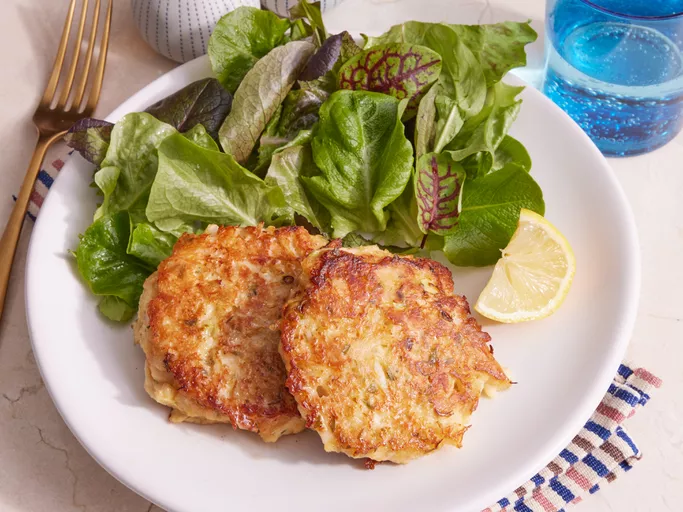

Crab Cakes

Description
These crab cakes are easy to make and the best I've ever eaten! Serve with coarse mustard on the plate or your favorite mustard sauce.
Ingridients
- 1 large egg
- 3 tablespoons mayonnaise
- 1 tablespoon minced green onions
- 4 teaspoons lemon juice
- 1 teaspoon dried tarragon/li>
- ⅛ teaspoon red pepper flakes
- 8 ounces crabmeat
- ½ cup crushed buttery round crackers
- 1 tablespoon butter